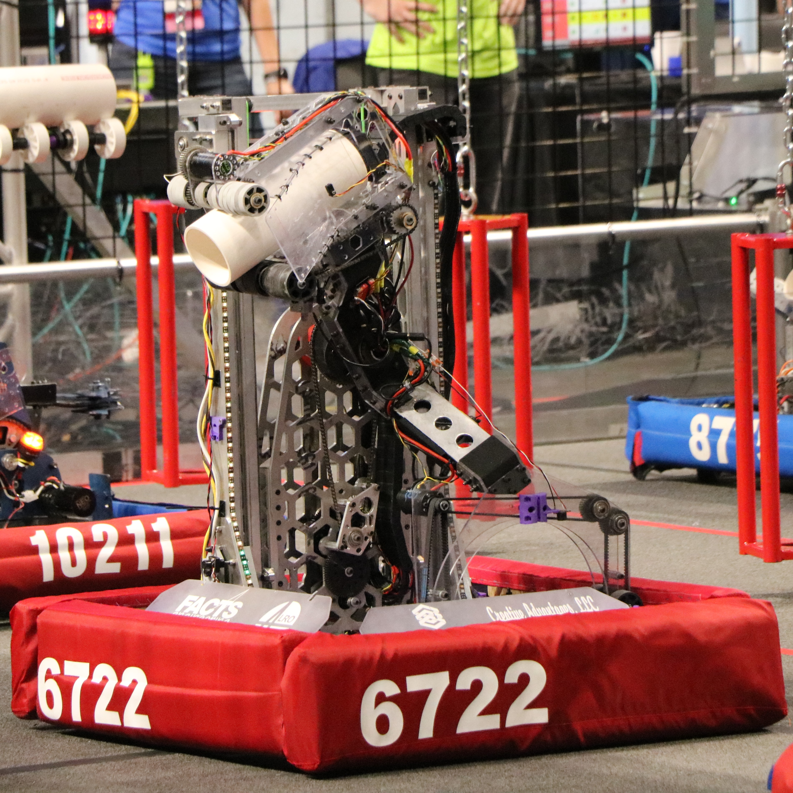

Our robots / Trident (2025)
Trident, our 2025 Robot

About Trident
The electrical lead, Katessa Janalynn, when asked about Trident, said, "The first design kind of looked like an angry Snail, with a shute-like coral mech that was attached to the cascade. On top of it sat a U-shaped algae mech on a pivot. The second design was at the Orlando Regional, debuting the whirlpool mech in all its glory. The algae and coral mechs sat on either side of a rotating structure, allowing for both to move with minimal effort. Wiring this would've been horrible if not for the ball bearing the wires were routed through. For Miami, we knew we wanted to reduce weight. With only a week to redesign, we agreed to shrink the cascade. We wanted to add a ground intake and climb to improve our robot. While our ground intake was quickly abandoned, our climb had a few successes. Ultimately the climb was also removed due to time restraints."